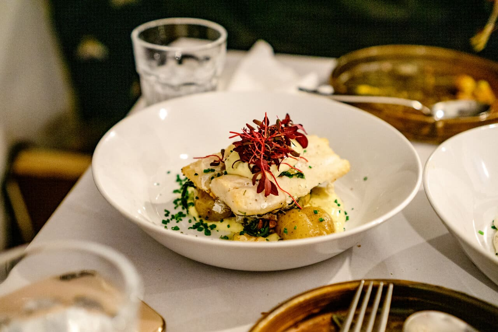

Monday 25 November 2024
London, rich in culinary diversity, is home to a wide array of fine dining establishments. No matter what your preferences are, there is a restaurant in the city that will suit your taste. Whether it is a high-end Michelin-star restaurant or a locally-known delight, travelers are bound to experience a flavorful culinary journey unlike anything they had ever experienced before. With British delights and other global treasures, London is regarded as a melting pot of culinary diversity.
This Mediterranean-styled culinary experience located in North-West London. Venue 295 serves as a restaurant, bar, and lounge that provides guests with a multi-dimensional experience. The restaurant and bar are towards the front of the restaurant, while the lounge is located in the back, making it the perfect location for late-night entertainment.
Venue 295 hosts live entertainment weekly such as a live DJ and dancers, making it the perfect spot for celebratory occasions. With the great sounds, intimate lighting, and private seating, guests are provided with a luxury experience.
This restuarant specializes in their Nikkei cuisine, which is a beautiful fusion of precision of Japanese ingredients and the flamboyance of Peruvian ingredients. The unique menu is coupled with an exquisite cocktail menu which introduces guests to a blend of flavors that they have never experienced before. One starter dish that skillfully showcases the marriage of these two unique styles would be the Edmame with Miso and Yuzu. The dish is originally of Japanese origin, but it is then elvated with some Peruvian flare by adding umami to the miso and then coating it in yuzu dressing.
With a combination of breathtaking art pieces and mesmerizing Amazon-jungle inspired color palette, guests are bound to feel comfortable while embarking on this new culinary experience. The interior showcases a perfect blend between Japanese and Peruvian colors with details such as wood paneling and textile accents. The high ceilings and open layout of the restaurant creates an airy feel throughout the restuarant, while the contemporary art gives it a more modern look. Guests are bound to appreciate how seamlessly Chotto Matte is able to appreciate and present a blending of cultures through the art of food.
Akoko is a Michelin-star restaurant that uses the traditinal aspects of food, art, and culture from West Africa. A speciality of Akoko would be its tasting menu, which provides guests the opportunity to get a sample of a wide variety of different West African dishes. The dishes have been regarded as refined and well balanced. The inspiration behind the majority of these dishes come from countries such as Senegal, Niger, The Gambia, and Ghana.
The layout of the dining room is open kitchen, which gives guests the opportunity to see the chefs' culinary and artistic process as they put these dishes together. The tables in the restaurant are well-spaced out, and the warm lighting coupled with the brown interior provide customers with a relaxed atmosphere as they enjoy their meal. It is important to note that Akoko takes customers by reservations only, so if you want to get a chance to experience this West African delight, make sure to call ahead.
Da Terra provides guests with both an elegant and modern contemporary dining experience. This Michelin-star restaurant specializes in Latin-American and Italian dishes that are created by Chef Rafael Cagali, whose strong Brazilian heritage shines through each of his creations. The dining experience for most guests usually lasts for approximately three hours, and in addition to the regular menu, guests are also provided with the opportunity to try items off of the restaurant's tasting menu.
The restaurant is frequently praised for the clear care and the master-level craftmanship in the presentation of each dish, as well as their bursting flavor. Chefs at Da Terra utilize a multitude of vibrant ingredients such as cassava, sugar cane, an assortment of tropical fruits, foie gras, and lobster in order to provide guests with an elevated tasting experience. A signature Brazilian dish that the restuarant has to offer would be Feijoada, which is a black bean stew. Ultimately, Da Terra is goes beyond a regular dining experience. It gives them the chance to really experience a piece of Latin-American culture.
The Angler restuarant is located in the heart of London and is well known for its speciality in seafood. The layout and decor of the restuarant represents a modern yet sophisticated style, which provides guests with a rather relaxed atmosphere that makes them feel welcome and well-cared for during their dining experience. It is the perfect location for a wide range of affairs such as casual meals all the way to business dinners. The Angler also has an outdoor terrace which gives diners the opportunity to get a scenic view of the city as they eat.
While the restaurant is well known for its variety in British Cuisine, the restaurant's speciality is in their seafood. The chefs only use the best high quality and sustainable ingredients while crafting their dishes. Some of the star seafood items that guests can enjoy include lobster, crab, scallops, and turkey fish. In addition to seafood, some other popular items include venison, lamb and beef. Ultimately, the goal of each chef at Angler is to create meals that have a great emphasis on a balance of flavor and clean artistic presentation.